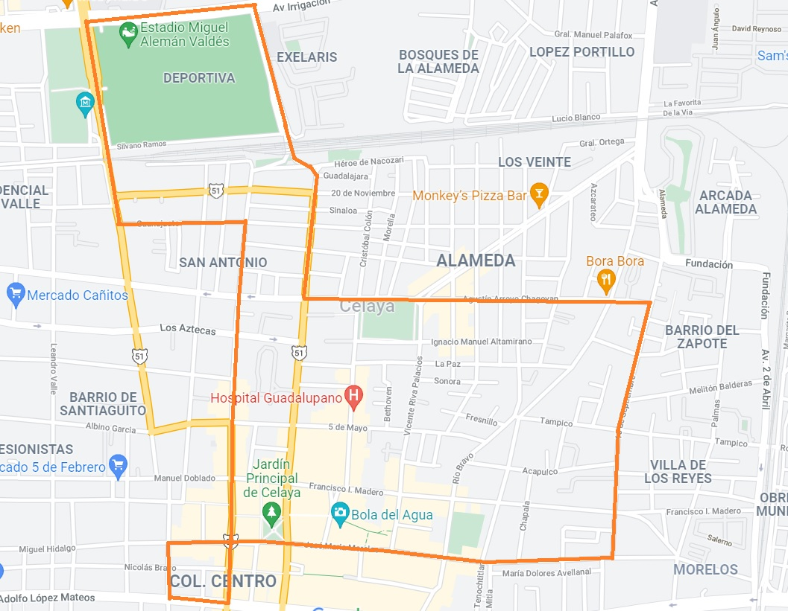

- Templo del Carmen
- Monumento a Tres Guerras
- Museo de Octavio Ocampo
- Antiguo Meson de Guadalupe
- Hotel Gomez
- Mercado Morelos
- Puente de las monas
- Inundaciones de Celaya
- Fundación de Celaya
- Templo del Zapote
- Batallas de Celaya
- La Alameda
- Santuario de la Vigen de Guadalupe
- ¡Y mucho más!